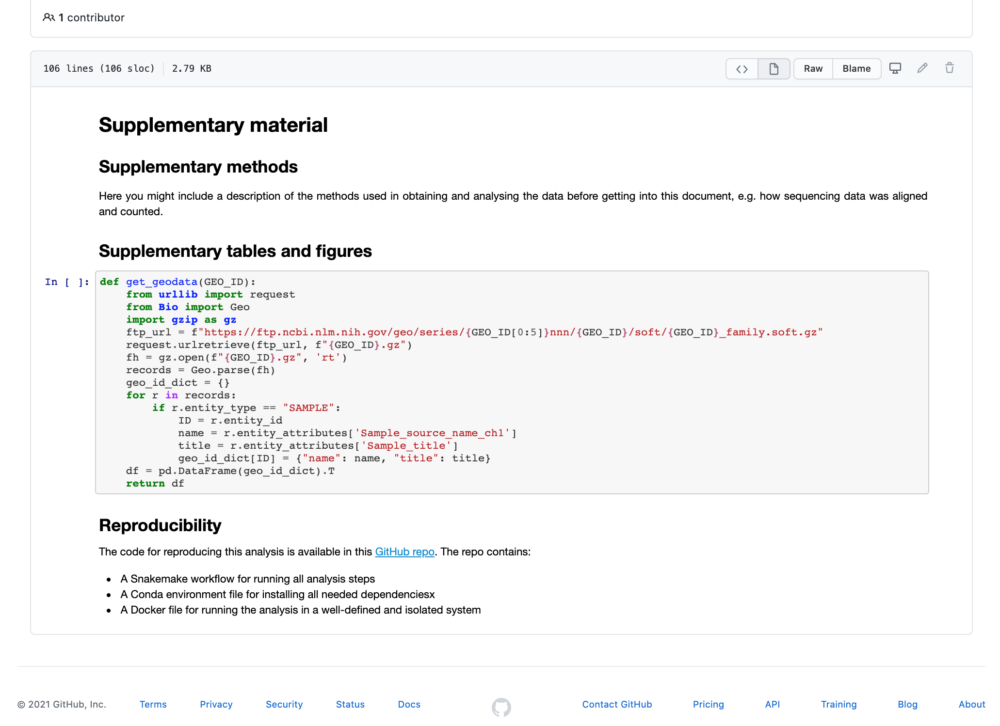
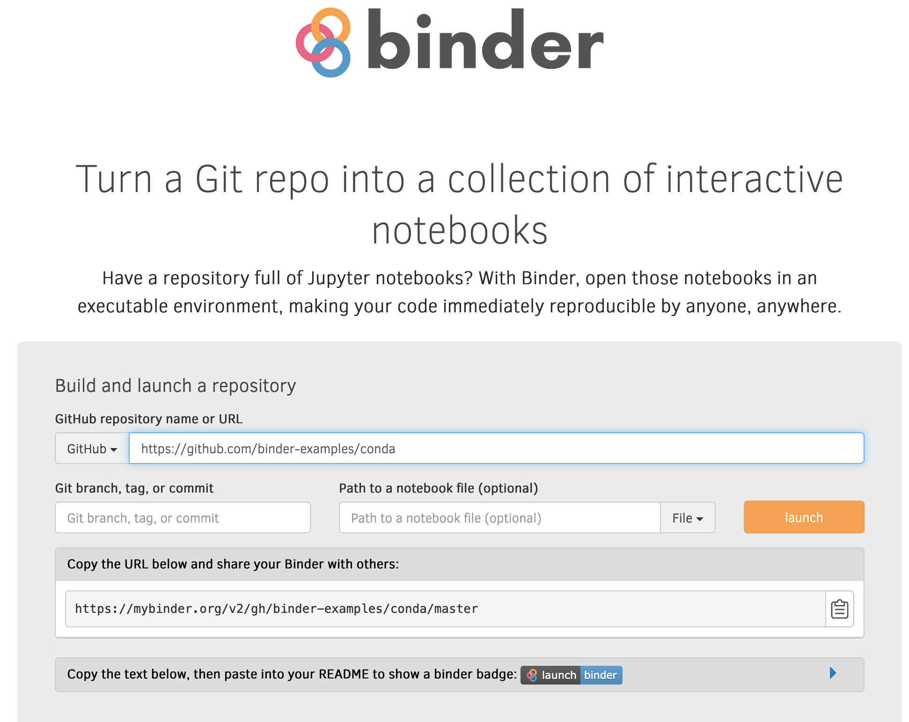

Jupyter 8 the mrsa case study
As you might remember from the intro, we are attempting to understand how lytic bacteriophages can be used as a future therapy for the multiresistant bacteria MRSA (methicillin-resistant Staphylococcus aureus). We have already seen how to define the project environment in the Conda tutorial and how to set up the workflow in the Snakemake tutorial. Here we explore the results from the Snakemake tutorial and generate a Supplementary Material file with some basic stats.
In the workshop-reproducible-research/tutorials/jupyter/ directory you will
find a notebook called supplementary_material.ipynb. Open this notebook with
Jupyter by running:
jupyter notebook supplementary_material.ipynb
Tip
Using what you've learned about markdown in notebooks, add headers and descriptive text to subdivide sections as you add them. This will help you train how to structure and keep note of your work with a notebook.
You will see that the notebook contains only a little markdown text and a code
cell with a function get_geodata. We'll start by adding a cell with some
import statements.
Run the cell with the get_geodata function and add a new cell directly after
it. Then add the following to the new cell:
import pandas as pd
import seaborn as sns
import matplotlib.pyplot as plt
import numpy as np
This imports the pandas (for working with tables), seaborn and
matplotlib.pyplot (for plotting) and numpy (for numerical operations)
Python modules.
Also add:
import matplotlib_inline
matplotlib_inline.backend_inline.set_matplotlib_formats('pdf', 'svg')
to set high-quality output for plots.
Run the cell and create a new one below it.
In the next cell we'll define some parameters to use for the notebook:
counts_file="results/tables/counts.tsv"
summary_file="results/tables/counts.tsv.summary"
multiqc_file="intermediate/multiqc_general_stats.txt"
rulegraph_file="results/rulegraph.png"
SRR_IDs=["SRR935090","SRR935091","SRR935092"]
GSM_IDs=["GSM1186459","GSM1186460","GSM1186461"]
GEO_ID="GSE48896"
As you can see we add paths to results files and define lists with some sample IDS. Run this cell and add a new one below it.
Next, we'll fetch some sample information from NCBI using the get_geodata
function defined at the start of the notebook and collate it into a dataframe.
id_df = pd.DataFrame(data=GSM_IDs, index=SRR_IDs, columns=["geo_accession"])
geo_df = get_geodata(GEO_ID)
name_df = pd.merge(id_df, geo_df, left_on="geo_accession", right_index=True)
# Create a dictionary to rename sample ids in downstream plots
name_dict = name_df.to_dict()
Run the cell and take a look at the contents of the name_df dataframe (e.g.
run a cell with that variable only to output it below the cell).
Now we'll load some statistics from the QC part of the workflow, specifically
the 'general_stats' file from multiqc. Add the following to a new cell and run
it:
qc = pd.read_csv(multiqc_file, sep="\t")
qc.rename(columns=lambda x: x.replace("FastQC_mqc-generalstats-fastqc-", "").replace("_", " "), inplace=True)
qc = pd.merge(qc, name_df, left_on="Sample", right_index=True)
qc
In the code above we load the multiqc file, rename the columns by stripping the
FastQC_mqc-generalstats-fastqc- part from column names and replace underscores
with spaces. Finally the table is merged with the information obtained in the
step above and output to show summary statistics from the QC stage.
Next it's time to start loading gene count results from the workflow. Start by reading the counts and summary results, then edit the columns and index:
# Read count data
counts = pd.read_csv(counts_file, sep="\t", header=0, comment="#", index_col=0)
# Read summary data
counts_summary = pd.read_csv(summary_file, sep="\t", index_col=0)
# Rename columns to extract SRR ids
counts.rename(columns = lambda x: x.split("/")[-1].replace(".sorted.bam",""), inplace=True)
counts_summary.rename(columns = lambda x: x.split("/")[-1].replace(".sorted.bam",""), inplace=True)
Take a look at the counts dataframe to get an idea of the data structure. As
you can see the dataframe shows genes as rows while the columns shows various
information such as start and stop, strand and length of the genes. The last
three columns contain counts of the genes in each of the samples.
If you have a look at the counts_summary dataframe you will see statistics
from the read assignment step, showing number of reads that could be properly
assigned as well as number of reads that could not be assigned to genes for
various reasons.
Now let's generate a barplot of the summary statistics. Before we plot, we'll remove rows that have only zero values:
# Remove rows with only zero values
summary_plot_data = counts_summary.loc[counts_summary.sum(axis=1)>0]
Now for the plotting:
# Set color palette to 'Set2'
colors = sns.color_palette("Set2")
# Create a stacked barplot
ax = summary_plot_data.T.plot(kind="bar", stacked=True, color=colors)
# Move legend and set legend title
ax.legend(bbox_to_anchor=(1,1), title="Category");
The final plot will be a heatmap of gene counts for a subset of the genes. We'll select genes whose standard deviation/mean count across samples is greater than 1.5, and have a maximum of at least 5 reads in 1 or more sample:
# Slice the dataframe to only sample counts
count_data = counts.loc[:, SRR_IDs]
# Filter to genes with std/mean > 1.2 and with a max of at least 5
heatmap_data = count_data.loc[(count_data.std(axis=1).div(count_data.mean(axis=1))>1.2)&(count_data.max(axis=1)>5)]
We'll also replace the SRR ids with the title of samples
used in the study, using the name_dict dictionary created further up in the
notebook:
heatmap_data = heatmap_data.rename(columns = name_dict['title'])
Now let's plot the heatmap. We'll log-transform the counts, set color scale to Blue-Yellow-Red and cluster both samples and genes using 'complete' linkage clustering:
with sns.plotting_context("notebook", font_scale=0.7):
ax = sns.clustermap(data=np.log10(heatmap_data+1), cmap="RdYlBu_r",
method="complete", yticklabels=True, linewidth=.5,
cbar_pos=(.7, .85, .05, .1), figsize=(3,9))
plt.setp(ax.ax_heatmap.get_xticklabels(), rotation=270)
In the code above we use the seaborn plotting_context function to scale all
text elements of the heatmap in one go.
As a final step we'll add some info for reproducibility under the
Reproducibility section. To add the overview image of the workflow found in
results/rulegraph.png we can use the Image function from IPython.display:
from IPython.display import Image
Image(rulegraph_file)
Let's also output the full conda environment so that all packages and versions are included in the notebook. There are several ways this can be done, for example you could simply add:
!conda list
to the end of the notebook.
Tip
If you want to know more about how notebooks can be integrated into Snakemake worfklows, see the Extra material at the end of this tutorial
Sharing your work#
The files you're working with come from a GitHub repo. Both GitHub and Bitbucket
can render Jupyter notebooks as well as other types of Markdown documents. Now
go to our GitHub repo at
https://github.com/NBISweden/workshop-reproducible-research
and navigate to tutorials/jupyter/supplementary_material.ipynb.

As you can imagine, having this very effortless way of sharing results can greatly increase the visibility of your work. You work as normal on your project, and push regularly to the repository as you would anyways, and the output is automatically available for anyone to see. Or for a select few if you're not ready to share your findings with the world quite yet.
Say your notebook isn't on Github/Bitbucket. All hope isn't lost there. Jupyter.org provides a neat functionality called nbviewer, where you can paste a URL to any notebook and they will render it for you. Go to https://nbviewer.jupyter.org and try this out with our notebook.
https://raw.githubusercontent.com/NBISweden/workshop-reproducible-research/main/tutorials/jupyter/supplementary_material.ipynb
Shared interactive notebooks#
So far we've only shared static representations of notebooks. A strong trend at the moment is to run your notebooks in the cloud, so that the person you want to share with could actually execute and modify your code. This is a great way of increasing visibility and letting collaborators or readers get more hands-on with your data and analyses. From a reproducibility perspective, there are both advantages and drawbacks. On the plus side is that running your work remotely forces you to be strict when it comes to defining the environment it uses (probably in the form of a Conda environment or Docker image). On the negative side is that you become reliant on a third-party service that might change input formats, go out of business, or change payment model.
Here we will try out a service called Binder, which lets you run and
share Jupyter Notebooks in Git repositories for free. There are a number
of example repositories that are
setup to be used with Binder. Navigate to
https://github.com/binder-examples/conda/
to see one such example. As you can see the repository contains a LICENSE
file, a README, an environment file and a notebook. To use a repository
with Binder the environment file should contain all the packages needed
to run notebooks in the repo. So let's try to run the index.ipynb file
using Binder:
Just go to https://mybinder.org and paste the link to the GitHub repo. Note the link that you can use to share your notebook. Then press "launch".

What will happen now is that:
- Binder detects the
environment.ymlfile in the root of the repo. Binder then builds a Docker image based on the file. This might take a minute or two. You can follow the progress in the build log. - Binder then launches the Jupyter Notebook server in the Docker container..
- ..and opens a browser tab with it for you.
Once the process is finished you will be presented with a Jupyter server
overview of the contents in the repository. Click on the index.ipynb
notebook to open it. Tada! You are now able to interact with (and
modify) someone else's notebook online.
Applied to your own projects you now have a way to run analyses in the cloud and in an environment that you define yourself. All that's needed for someone to replicate your analyses is that you share a link with them. Note that notebooks on Binder are read-only; its purpose is for trying out and showing existing notebooks rather than making new ones.
Tip
By default Binder looks for configuration files such as environment.yml
in the root of the repository being built. But you may also put
such files outside the root by making a binder/ folder in the root
and placing the file there.
A note on transparency
Resources like Github/Bitbucket and Jupyter Notebooks have changed the way we do scientific research by encouraging visibility, social interaction and transparency. It was not long ago that the analysis scripts and workflows in a lab were well-guarded secrets that we only most reluctantly shared with others. Assuming that it was even possible. In most cases, the only postdoc who knew how to get it to work had left for a new position in industry, or no one could remember the password to the file server. If you're a PhD student, we encourage you to embrace this new development wholeheartedly, for it will make your research better and make you into a better scientist. And you will have more fun.